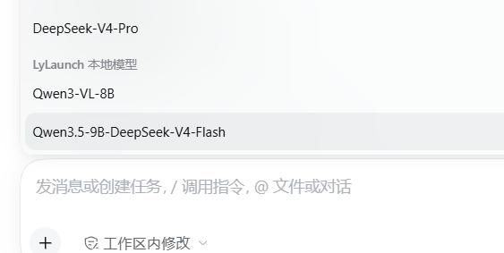

1先把模型装好
要接的是「视觉 · 对话」这两个，装完直接显示 已安装 · 可直接使用。没装的模型不会出现在接入列表里。
01Integration · 接入
装好的模型，在设置里点一下「接入」，dsh 的模型选择器里就多出一组「LyLaunch 本地模型」。接进去的两个都带视觉，能读图也能聊天；它到底在跑什么、吃多少显存，同一页的监控面板都写着。

要接的是「视觉 · 对话」这两个，装完直接显示 已安装 · 可直接使用。没装的模型不会出现在接入列表里。

同一页能看到接入了哪几个、引擎在不在跑、上下文给了多大。改完上下文要按重启才生效。

选择器里会多出一组「LyLaunch 本地模型」，和云端账号并列。选中之后所有请求都走本机。
速度、显存与缓存命中均为实机读数，会随模型大小和显卡不同。
返回轻启 LyLaunch 产品页